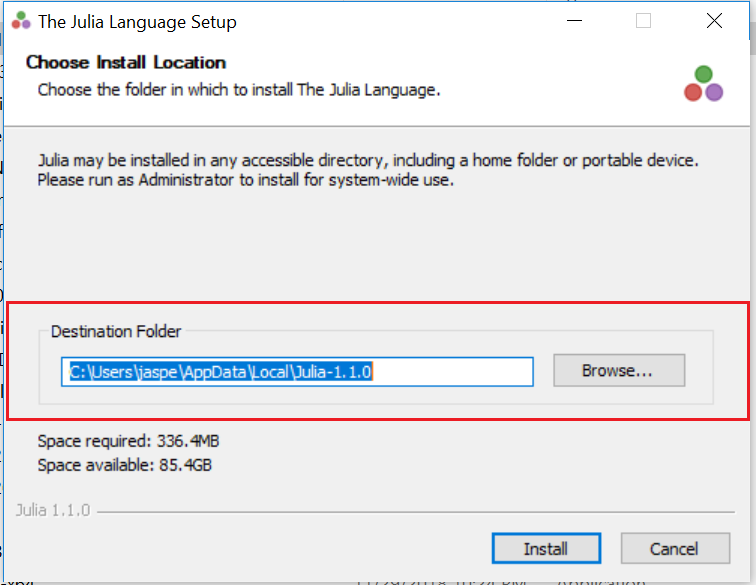
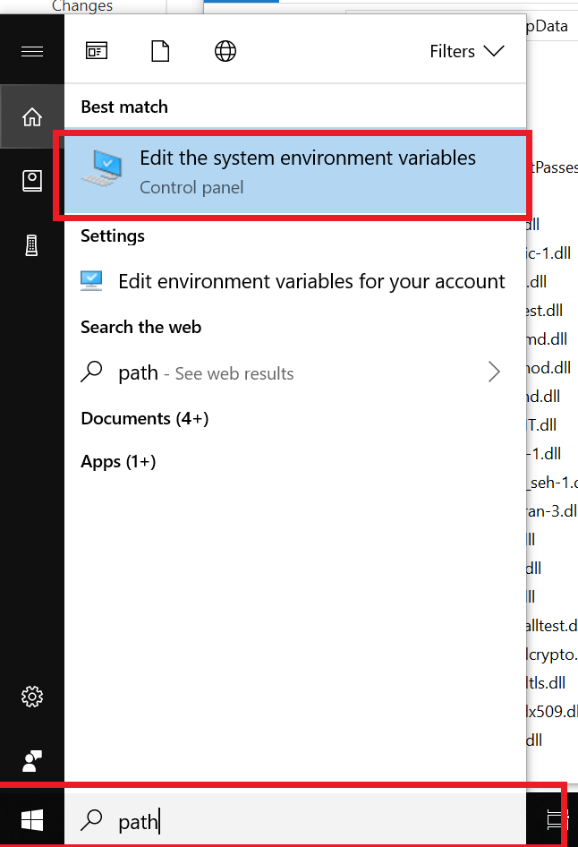
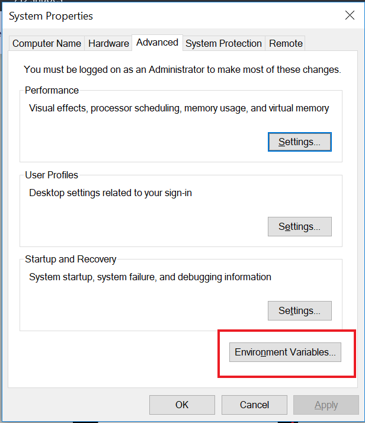
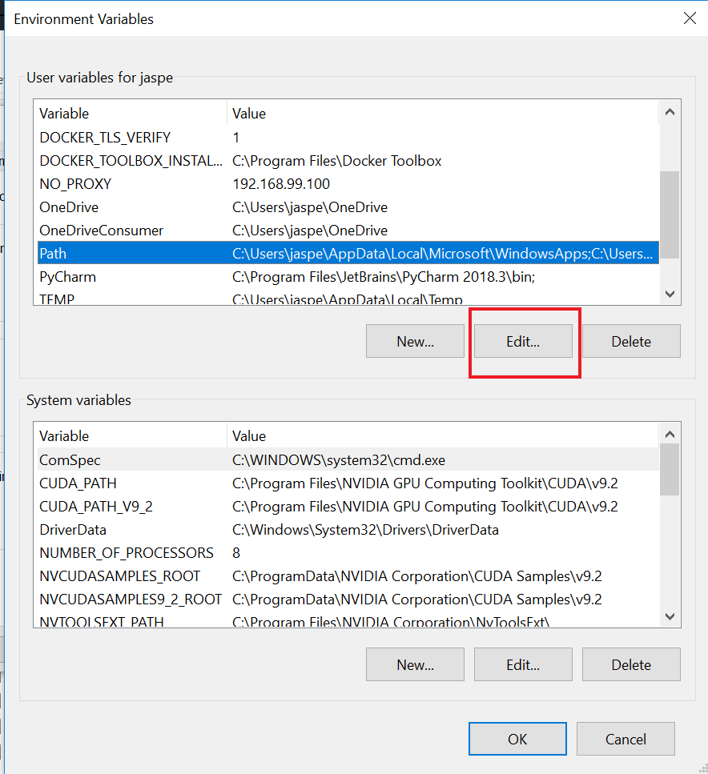
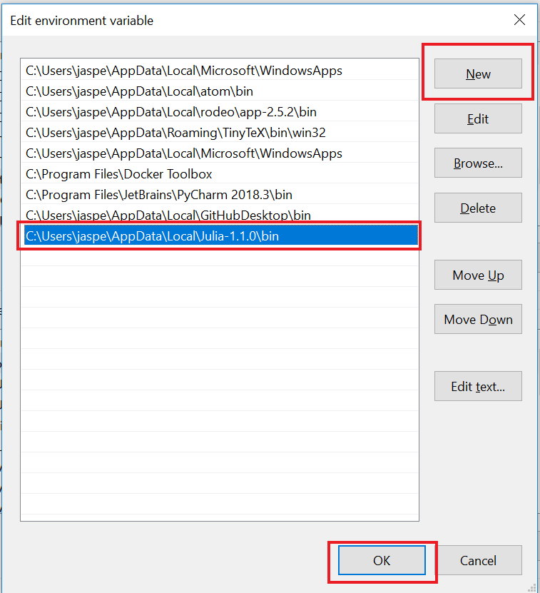

I created this R library to implement some core Bayesian ideas taught in the course “Introduction to Bayesian Statitics” at Utrecht University. Secondly, it also provided me with an opportunity to further practice Julia. Julia code is fast, but needs to compile on the first run. Hence, the highly repetitive nature of the code for Bayesian estimation (small functions that are repeatedly used) makes Julia an ideal programming language to run Markov Chain Monte Carlo (MCMC) samplers.
Thanks to the R library JuliaCall, it is possible to create a near-seamless bridge between R code and Julia code (much like the Reticulate library does for Python). This bridge is used as follows:
lm() function. blm imports the magrittr library to facilitate model building, and allows the user to build a model using a ‘tidy’ workflow. The functions associated with this part of the model begin with set_ (e.g. set_priors()). The exception here is the function compute_null_model(), which (if added) computes the intercept-only model during evaluation.collect() command from the dbplyr library). This part calls the Julia code to draw posterior samples. The functions associated with this part of the model end with _posterior (e.g. sample_posterior(), update_posterior(), delete_posterior()).evaluate_ (e.g. evaluate_model_fit()).All core functions return S3 objects. Data embedded in these objects can be retrieved using the get_value() function. To check whether an object contains a specific value, you can execute contains().
The following documents contain specific information or implementation notes:
The folder structure is described below. Important files are annotated.
├── data # Contains data used in the package
│ └── directors.rda
├── data-raw # R script used to create 'directors.rda'
│ └── preprocess_directors_data.R
├── notes # Implementation notes, course summary and final assignment
│ ├── 1. Implementation notes Gibbs
│ ├── conditionalposteriors.pdf # - Implementation notes for Gibbs sampler
│ └── ...
│ ├── 2. Implementation notes MH
│ ├── MH.pdf # - Implementation notes for Metropolis-Hastings sampler
│ └── ...
│ ├── 3. Course summary
│ ├── course_summary.pdf # - Course summary
│ └── ...
│ ├── 4. Final Assigment
│ ├── final_assignment.pdf # - Final assignment for the course
│ └── ...
│ ├── 5. blm example
│ ├── blm.pdf # - Short example of blm code
│ └── ...
│ ├── 6. Linear Mixed Effects JAGS
│ ├── multilevel_jags.pdf # - multilevel analysis of the directors dataset using JAGS
│ └── ...
│ ├── 7. Bayes Factors
│ ├── BF.pdf # - Some background and references on Informative Hypotheses and Bayes Factors
│ └── ...
├── docs # pkgdown documents
│ └── ...
├── experiments # Various files used to test out new features / run simulations
│ └── ...
├── img # Images used by the README
│ └── ...
├── inst
│ └── julia
│ └── blm.jl # Julia script containing core blm functions.
├── man # Documentation for R functions used by the library
│ └── ...
├── R
│ ├── blm_julia_setup.R # Logic to build a bridge between R / Julia
│ ├── classes.R # core S3 classes used by blm library
│ ├── data.R # Documentation for the 'directors' data
│ ├── generics.R # S3 generics for all methods defined in blm
│ ├── ggplot_theme.R # ggplot2 theme used by blm plotting function
│ ├── helpers.R # utility functions
│ ├── input_checks.R # helper functions that check whether inputs to key functions are valid
│ ├── methods_blm.R # S3 methods for core class 'blm'
│ ├── methods_hypotheses.R # S3 methods for classes 'hypotheses' and 'hypothesis'
│ ├── methods_misc.R # S3 methods for minor classes 'R2' and 'DIC'
│ ├── methods_posterior.R # S3 methods for class 'posterior'
│ ├── methods_ppc.R # S3 methods for class 'ppc'
│ ├── methods_prior.R # S3 methods for classes 'prior' and 'priors'
│ ├── methods_sampler.R # S3 methods for class 'sampler'
│ ├── methods_shared.R # S3 methods that are shared by classes
│ └── zzz.R # Contains start-up logic when package is loaded by user
├── tests
│ └── ... # Unit tests
├── vignettes
│ └── ... # Package vignettes
├── LICENSE
├── .gitignore
├── .Rbuildignore
├── .travis.yml
├── .blm.Rproj
├── .DESCRIPTION
├── NAMESPACE
└── README.mdInstalling the R library from GitHub is straightforward
devtools::install_github("JasperHG90/blm")R dependencies will be installed automatically. You will also need an installation of Julia (>= 1.0.0, in practice either the long-term stable release or the current stable version), which you can install from here.
On Windows, follow the following steps.



4, Select the ‘path’ variable under ‘user variables for


To test whether R can find the Julia installation, execute the following in R:
library(blm)
# Create the bridge between R and Julia
blm_setup()If this succeeds, you should see something akin to the following message:
Julia version 1.0.3 at location /home/jasper/julia-1.0.3/bin will be used.
Loading setup script for JuliaCall...
Finish loading setup script for JuliaCall.This means you are good to go.
To build a Bayesian Linear Model (blm) object, start by executing the following:
# Load data
data("directors")
# Log the compensation variable ('000 GBR)
directors$Compensation <- log(directors$Compensation)
# Build the model
dirfit <- blm("Compensation ~ Age", data=directors)This creates a blm object for the ‘directors’ data. At this point, we have a model with uninformative priors (mu=0, sd=1000) and initial values that are drawn from these priors:
print(dirfit)Bayesian Linear Model (BLM) object:
Data:
Predictors: 1
Outcome: Compensation
Sampler:
Chains: 1
Iterations: 10000
Thinning: 1
Burn: 1000
Priors (Coefficients) :
b0 b1
mu 0 0
tau 1000 1000
Priors (Residuals) :
sigma
rate 0.01
scale 0.01Furthermore, the sampling settings are set to just $1$ chain and $10.000$ iterations. We can update the model as follows:
# Set the following values for the dirfit model
dirfit <- dirfit %>%
# Sampling settings
set_sampling_options(chains=2, iterations=20000, burn=3000, thinning=2) %>%
# Set priors for Age (we're on a log scale)
set_prior("b1", mu=0.2, sd = 0.001) %>%
# Set initial values
set_initial_values(chain_1 = list("b" = c(-1, 1), "sigma" = 1),
chain_2 = list("b" = c(1, -1), "sigma" = 2))
# Print object
print(dirfit)Bayesian Linear Model (BLM) object:
Data:
Predictors: 1
Outcome: Compensation
Sampler:
Chains: 2
Iterations: 20000
Thinning: 2
Burn: 3000
Priors (Coefficients) :
b0 b1
mu 0 0.200
tau 1000 0.001
Priors (Residuals) :
sigma
rate 0.01
scale 0.01View the full example here [LINK].
I used the following materials in building this library
All course materials @ Utrecht University Bayesian statistics, taught by Herman Hoijtink & Fayette Klaassen.
Gabry, J., Simpson, D., Vehtari, A., Betancourt, M., & Gelman, A. (2019). Visualization in Bayesian workflow. Journal of the Royal Statistical Society: Series A (Statistics in Society), 182(2), 389-402.
Schad, D. J., Betancourt, M., & Vasishth, S. (2019). Toward a principled Bayesian workflow in cognitive science. arXiv preprint arXiv:1904.12765.
Gelman, A., Goodrich, B., Gabry, J., & Vehtari, A. (2018). R-squared for Bayesian regression models. The American Statistician, (just-accepted), 1-6.
Nakagawa, S., & Schielzeth, H. (2013). A general and simple method for obtaining R2 from generalized linear mixed‐effects models. Methods in Ecology and Evolution, 4(2), 133-142.
Aarts, E. (2019). Introduction to multilevel analysis and the basic two-level regression model, week 1 notes [powerpoint presentation]. -Introduction to Multilevel Analysis-, Utrecht University.
Lynch, S. M. (2007). Introduction to applied Bayesian statistics and estimation for social scientists. Springer Science & Business Media.
Gelman, A., Stern, H. S., Carlin, J. B., Dunson, D. B., Vehtari, A., & Rubin, D. B. (2013). Bayesian data analysis. Chapman and Hall/CRC.
Kruschke, J. (2014). Doing Bayesian data analysis: A tutorial with R, JAGS, and Stan. Academic Press.
Hox, J. J., Moerbeek, M., & Van de Schoot, R. (2017). Multilevel analysis: Techniques and applications. Routledge.
Robert, C. P., Casella, G., & Casella, G. (2010). Introducing monte carlo methods with r (Vol. 18). New York: Springer.
Hoijtink, H., Mulder, J., Van Lissa, C. J., & Gu, X. (2019). A tutorial on testing hypotheses using the Bayes factor.
Hoijtink, H., Gu, X., & Mulder, J. (2018). Bayesian evaluation of informative hypotheses for multiple populations. British Journal of Mathematical and Statistical Psychology.
Gu, X., Mulder, J., & Hoijtink, H. (2018). Approximated adjusted fractional Bayes factors: A general method for testing informative hypotheses. British Journal of Mathematical and Statistical Psychology, 71(2), 229-261.
Gu, X., Hoijtink, H., & Mulder, J. (2016). Error probabilities in default Bayesian hypothesis testing. Journal of Mathematical Psychology, 72, 130-143.
Lambert, B. [Ben Lambert]. (2018, May 17). Introducing Bayes Factors and Marginal Likelihoods. Retrieved from https://www.youtube.com/watch?v=T-kMpA4z-7k
Morey, R. (2014, February 9). What is a Bayes Factor?. [Blog Post]. Retrieved from https://bayesfactor.blogspot.com/2014/02/the-bayesfactor-package-this-blog-is.html